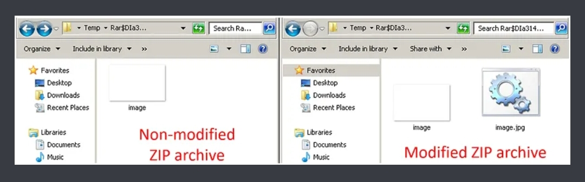

Pendahuluan
Pada era globalisasi ini, penjenayah siber yang mementingkan kewangan telah beralih perhatian mereka kepada sasaran baru iaitu pedagang saham & broker saham (Trading Industry). Thread ini akan pengeksploitasian terkini terhadap satu titik kelemahan terbaru iaitu 0day dalam perisian pengkompresan Windows yang popular iaitu WinRAR. 0day ini yang dikenali sebagai CVE-2023-38831 telah menjadi senjata utama bagi penjenayah siber untuk menggugat keselamatan kewangan pedagang di seluruh dunia.
CVE-2023-38831 bermaksud kelemahan yang boleh dieksploitasi dalam pemprosesan format fail ZIP dalam alat pengarkiban WinRAR untuk Windows. Sejak April 2023, penjenayah siber telah menggunakan kelemahan ini untuk menyebarkan pelbagai jenis perisian hasad seperti DarkMe, GuLoader, dan Remcos RAT. Kumpulan-IB, yang diiktiraf dengan penemuan ini, melaporkan bahawa sekurang-kurangnya 130 peranti peniaga telah dijangkiti. Sifat sebenar pelanggaran ini dan kerugian kewangan serentak yang berlaku masih belum disahkan, menekankan keperluan menangani isu ini dengan segera.
Key Findings
- Unit Pemantauan Ancaman Group-IB telah mengenal pasti kerentanan zero-day yang digunakan dalam WinRAR sejak April 2023.
- Penjenayah siber sedang mengeksploitasi kerentanan yang membolehkan mereka memalsukan extension fail, yang bermaksud mereka mampu menyembunyikan pelancaran skrip berbahaya dalam arkib yang berpura-pura sebagai '.jpg', '.txt', atau format fail lain.
- Kerentanan ini telah dilaporkan kepada RARLAB, yang seterusnya mengeluarkan versi baru WinRAR.
- Kerentanan ini juga telah dilaporkan kepada MITRE Corporation, dan diberi nombor CVE-2023-38831.
- Sebuah arkib ZIP telah dicipta untuk menghantar pelbagai keluarga perisian hasad: DarkMe, GuLoader, Remcos RAT.
- Archives ZIP ini telah disebarkan dalam forum-forum khusus untuk Trader & Broker
- Pada saat penghantaran laporan ini, masih terdapat 130 peranti peniaga yang masih terjangkit. Group-IB tidak dapat
- Setelah peranti terjangkit, penjenayah siber menarik wang daripada akaun broker. Jumlah keseluruhan kerugian kewangan masih tidak diketahui.